Real Mode
Real Mode is also known as real address mode. Real means real. This real is divided into two aspects. One is to run real instructions, without distinguishing the actions of instructions, and to directly execute the real functions of instructions. The address is real, and any address is sent to memory without restriction.
Real Mode Registers
Since the CPU completes the corresponding function according to the instruction, for example: ADD AX, CX; this instruction completes the addition operation. AX and CX are the operands of the ADD instruction, which can be understood as the two parameters of the ADD function. These two parameters’ function is to add the data in AX and CX. The operand of an instruction can be a register, a memory address, or a constant. In fact, it is usually a register. AX and CX are the registers in the x86 CPU. Let’s take a look at the registers of the x86 CPU in real mode. Each register in the table is 16 bits.
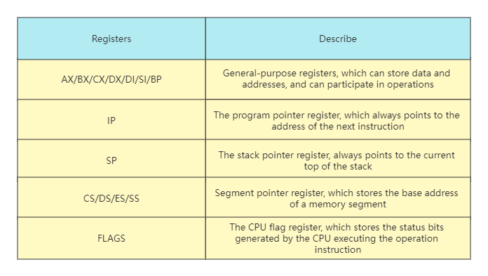
Accessing Memory in Real Mode
Although there are registers, data and instructions are stored in memory. Under normal circumstances, it is necessary to load data into registers to operate, and there is also the action of fetching instructions. All these need to access memory, and we know that accessing memory depends on the address value.
The question is, how is this value calculated? The calculation process is shown in the figure below.
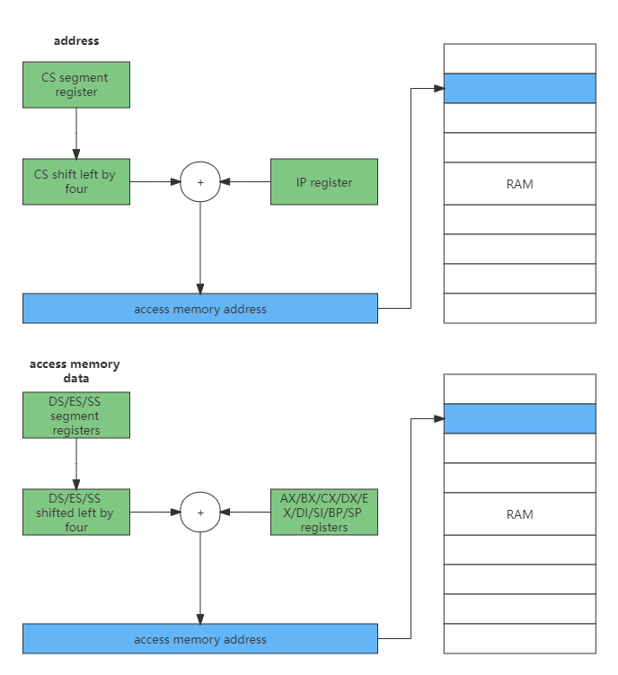
Combined with the above figure, it can be found that all memory addresses are shifted left by 4 bits from the segment register, plus a value or constant in a general register to form an address, and then access the memory from this address. This is the famous segmented memory management model. It’s just important to note here that the code segment is determined by CS and IP, while the stack segment is determined by SS and SP segments.
Real Mode Interrupt
Interrupt is to suspend the execution of the current program, and instead jump to another specific address to run a specific code. In real mode, its implementation process is to save the CS and IP registers first, and then load the new CS and IP registers, so how is the interrupt generated?
In the first case, the interrupt controller sends an electronic signal to the CPU, and the CPU responds to this signal. The interrupt controller then sends the interrupt number to the CPU, which is a hardware interrupt.
The second case is that the CPU executes the INT instruction, which will be followed by a constant, which is the soft interrupt number. This condition is a software interrupt.
Whether it is a hardware interrupt or a software interrupt, it is a way for the CPU to respond to external events. In order to realize the interrupt, it is necessary to put an interrupt vector table in the memory, and the address and length of this table are pointed to by the specific register IDTR of the CPU. In real mode, an entry in the table consists of a code segment address and an offset within the segment, as shown in the following figure.
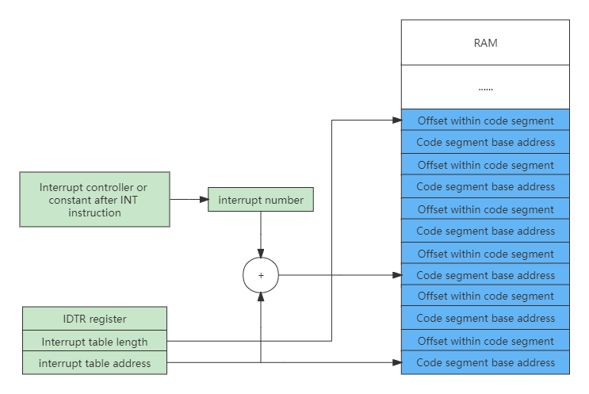
With the interrupt number, the CPU can calculate the entry in the interrupt vector according to the information in the IDTR register, and then load the CS (load code segment base address) and IP (load code segment offset) registers, and finally respond interrupt.
Let’s write a Hello World application under DOS. This is an assembly code program working in real mode, with a total of 16 bits. The specific code is as follows:
data SEGMENT ;
hello DB 'Hello World!$'
data ENDS
code SEGMENT ;
ASSUME CS:CODE,DS:DATA
start:
MOV AX,data
MOV DS,AX
LEA DX,hello
MOV AH,09h
INT 21h
MOV AX,4C00h
INT 21h
code ENDS
END startMost are operation registers, where LEA is an address fetch instruction, MOV is a data transfer instruction, and INT is an interrupt instruction.
INT 21H instruction description and usage
For example: keyboard input is required and echoed.
MOV AH,01
INT 21HThrough these two instructions, the input characters will be stored in AL, and the value of AH needs to be obtained by looking up the table. The table is as follows:
| AH | Function | Call parameters | Return parameter |
|---|---|---|---|
| 0 | Program termination (same as INT 20H) | CS=block prefix | |
| 1 | keyboard input and echo | AL=Enter character | |
| 2 | show output | DL=output character | |
| 3 | Asynchronous communication input | AL=input data | |
| 4 | Asynchronous communication output | DL = output data | |
| 5 | printer output | DL=output character | |
| 6 | Direct console I/O | DL=FF (input) DL=Character (output) | AL=Enter character |
| 7 | keyboard input (no echo) | AL=Enter character | |
| 8 | Keyboard input (no echo) to detect Ctrl-Break | AL=Enter character | |
| 9 | Display string DS:DX=string address ‘$’ end string | ||
| 0A | Keyboard input into the buffer DS:DX=the first address of the buffer (DS:DX)=the maximum number of characters in the buffer | (DS:DX+1)=Number of characters actually entered | |
| 0B | Check keyboard status | AL=00 with input AL=FF without input | |
| 0C | Clear the input buffer and request the specified input function | AL=input function number (1,6,7,8,A) | |
| 0D | Disk reset | clear file buffer | |
| 0E | Specifies the current default disk drive | DL=drive letter 0=A,1=B,… | AL=Number of drives |
| 0F | open a file | DS:DX=FCB first address | AL=00 file found AL=FF file not found |
| 10 | close file | DS:DX=FCB first address | AL=00 The directory was modified successfully AL=FF The file was not found in the directory |
| 11 | Find the first directory entry DS:DX=FCB first address | AL=00 found AL=FF not found | |
| 12 | Find the next directory entry | DS:DX=FCB first address (with * or ? in the file) | AL=00 found AL=FF not found |
| 13 | Delete Files | DS:DX=FCB first address | AL=00 Deleted successfully AL=FF Not found |
| 14 | sequential read | DS:DX=FCB first address | AL=00 read successfully =01 end of file, no data in record =02 insufficient DTA space =03 end of file, incomplete record |
| 15 | write sequentially | DS:DX=FCB first address | AL=00 Write successfully =01 Disk full =02 DTA space is not enough |
| 16 | build file | DS:DX=FCB first address | AL=00 build successfully =FF no disk space |
| 17 | file rename | DS:DX=FCB first address | (DS:DX+1)=old filename (DS:DX+17)=new filename |
| 19 | Get the current default disk drive | AL=default drive letter 0=A,1=B,2=C,… | |
| 1A | set DTA address | DS:DX=DTA address | |
| 1B | Get the default drive FAT information | AL=Number of sectors per cluster DS:BX=FAT identification byte CX=Physical sector size DX=Number of clusters of default drive | |
| 1C | Fetch any drive FAT information | DL=drive letter | Ditto |
| 21 | random read | DS:DX=FCB first address | AL=00 read successfully =01 end of file =02 buffer overflow =03 buffer full |
| 22 | random write | DS:DX=FCB first address | AL=00 write success =01 disk full =02 buffer overflow |
| 23 | Determining file size | DS:DX=FCB first address | AL=00 success (fill in FCB for file length) AL=FF not found |
| 24 | set random record number | DS:DX=FCB first address | |
| 25 | set interrupt vector | DS:DX=interrupt vector AL=interrupt type number | |
| 26 | Create a block prefix | DX=new block prefix | |
| 27 | random block read | DS:DX=FCB first address CX=Number of records | AL=00 Read successfully =01 End of file =02 Buffer is too small, end of transmission =03 Buffer is not full |
| 28 | random block write | DS:DX=FCB first address CX=Number of records | AL=00 write success =01 disk full =02 buffer overflow |
| 29 | Analysis file name | ES:DI=FCB first address DS:SI=ASCIIZ string AL=Control analysis flag | AL=00 Standard file =01 Ambiguous file =02 Illegal drive letter |
| 2A | take date | CX=year DH:DL=month:day (binary) | |
| 2B | Set Date CX:DH:DL=Year:Month:Day | AL=00 success =FF invalid | |
| 2C | take time | CH:CL=hour:minute DH:DL=second:1/100th of a second | |
| 2D | set time | CH:CL=hour:minute DH:DL=second:1/100th of a second | AL=00 success =FF invalid |
| 2E | Set the disk automatic read and write flag | AL=00 turns off the flag AL=01 turns on the flag | |
| 2F | Get the first address of the disk buffer | ES:BX=buffer first address | |
| 30 | Get the DOS version number | AH=release number, AL=version | |
| 31 | end and stay | AL=return code DX=resident area size | |
| 33 | Ctrl-Break detection | AL=00 get state =01 set state (DL) DL=00 close detection =01 open detection | DL=00 Disable Ctrl-Break detection =01 Enable Ctrl-Break detection |
| 35 | Fetch interrupt vector | AL=Interrupt Type | ES:BX=Interrupt Vector |
| 36 | Get free disk space | DL=drive letter 0=default,1=A,2=B,… | Success: AX=Number of sectors per cluster BX=Number of valid clusters CX=Number of bytes per sector DX=Number of total clusters Failure:AX=FFFF |
| 38 | Set/fetch country information | DS:DX=Information area first address | BX=Country code (International phone prefix code) AX=Error code |
| 39 | Create subdirectory (MKDIR) | DS:DX=ASCIIZ string address | AX=Error code |
| 3A | Delete subdirectory (RMDIR) | DS:DX=ASCIIZ string address | AX=Error code |
| 3B | Change current directory (CHDIR) | DS:DX=ASCIIZ string address | AX=Error code |
| 3C | build file | DS:DX=ASCIIZ string address CX=file attribute | Success: AX=file code Error: AX=error code |
| 3D | open a file | DS:DX=ASCIIZ string address AL=0 read=1 write=3 read/write | Success: AX=file code Error: AX=error code |
| 3E | close file | BX=file code | Failed: AX=error code |
| 3F | read file or device | DS:DX=Data buffer address BX=File code CX=Number of bytes read | Read successfully: AX=number of bytes actually read AX=0 has reached the end of the file Read error: AX=error code |
| 40 | write to file or device | DS:DX=data buffer address BX=file code CX=number of bytes written | Write successfully: AX=number of bytes actually written Write error:AX=error code |
| 41 | Delete Files | DS:DX=ASCIIZ string address | success: AX=00 |
| 42 | Move the file pointer | BX=file code CX:DX=displacement AL=movement method (0: absolute displacement from the beginning of the file, 1: relative movement from the current position, 2: absolute displacement from the end of the file) | Success:DX:AX=new file pointer position Error:AX=error code |
| 43 | set/get file attributes | DS:DX=ASCIIZ string address AL=0 Get file attribute AL=1 Set file attribute CX=File attribute | Success: CX=File Properties Fail: CX=Error Code |
| 44 | Device file I/O control | BX=file code AL=0 get status =1 set status DX =2 read data =3 write data =6 get input status =7 get output status | DX=device information |
| 45 | Copy file code | BX=File code 1 | Success: AX=file code 2 Failure: AX=error code |
| 46 | Manually copy the file code | BX=File code 1 CX=File code 2 | Failed: AX=error code |
| 47 | Get the pathname of the current directory | DL=drive number DS:SI=ASCIIZ string address | (DS:SI)=ASCIIZ string Failed:AX=error code |
| 48 | Allocate memory space | BX=Apply for memory capacity | Success: AX= allocate memory first place Fail: BX= maximum available memory |
| 49 | Free up content space | ES = memory start segment address | Failed: AX=error code |
| 4A | Adjust allocated chunks | ES=Original memory starting address BX=Re-applied capacity | Failed: BX=maximum free space AX=error code |
| 4B | Assembly/Execution Program | DS:DX=ASCIIZ string address ES:BX=First address of parameter area AL=0 Load execution AL=3 Load not executed | Failed: AX=error code |
| 4C | end with return code | AL=return code | |
| 4D | get return code | AX=return code | |
| 4E | Find the first matching file | DS:DX=ASCIIZ string address CX=property | AX=Error code(02,18) |
| 4F | Find the next matching file | DS:DX=ASCIIZ string address (with ? or * in the file name) | AX=Error code(18) |
| 54 | Disk automatic read and write mark | AL=Current flag value | |
| 56 | file rename | DS:DX=ASCIIZ string (old) ES:DI=ASCIIZ string (new) | AX=Error code(03,05,17) |
| 57 | Set/fetch file date and time | BX=file code AL=0 read AL=1 set (DX:CX) | DX:CX=date and time failed:AX=error code |
| 58 | get/set allocation strategy code | AL=0 fetch code AL=1 set code (BX) | Success: AX=policy code Fail: AX=error code |
| 59 | get extended error code | AX=Extended Error Code BH=Error Type BL=Suggested Action CH=Error Location | |
| 5A | create temporary files | CX=file attribute DS:DX=ASCIIZ string address | Success: AX=file code Fail: AX=error code |
| 5B | create new file | CX=file attribute DS:DX=ASCIIZ string address | Success: AX=file code Fail: AX=error code |
| 5C | control file access | AL=00 block =01 open BX=file code CX:DX=file displacement SI:DI=file length | Failed: AX=error code |
| 62 | Take the block prefix | BX=PSP address |
Protected Mode
As the scale of software continues to increase, it requires higher computing power and larger memory capacity. The memory is large, the first problem to be solved is the addressing problem, because 16-bit registers can only represent 216 addresses at most, so the CPU’s registers and arithmetic units must be expanded to 32-bit.
Protected Mode Register
Compared with Real Mode, Protected Mode adds some control registers and segment registers, expands the bit width of general-purpose registers, all general-purpose registers are 32-bit, and the lower 16 bits can be used alone, and the lower 16 bits can be split into two 8-bit registers, as shown in the table below.
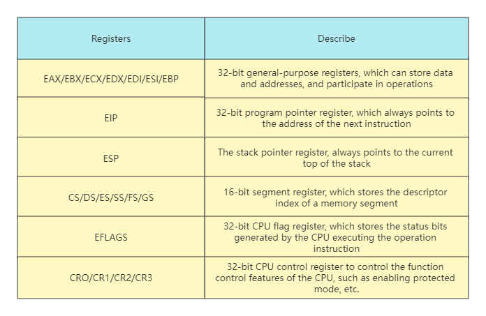
Protected Mode Privilege Level
In order to distinguish which instructions (such as in, out, cli) and which resources (such as registers, I/O ports, memory addresses) can be accessed, the CPU implements privilege levels. The privilege level is divided into 4 levels, R0~R3. The number of instructions executed by each privilege level is different. R0 can execute all instructions, and R1, R2, and R3 decrease in turn, and they can only execute a subset of the number of instructions at the previous level. The memory access is achieved by the cooperation of the segment descriptor and the privilege level mentioned later. As shown below:
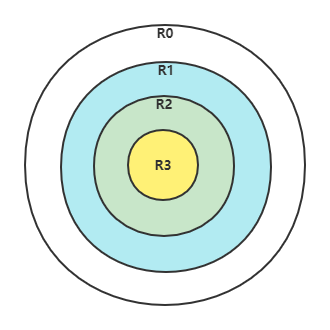
The above ring diagram, from the outside to the inside, can not only reflect the size of power, but also how much each privilege level controls access to resources, and can also reflect the inclusion relationship between each privilege level. R0 has the most power and can access low-privilege resources, but not vice versa.
Protected Mode Segment Descriptor
So far, memory is still a segmentation model. To protect memory, it can be converted into segment protection. Due to the expansion of the CPU, the 32-bit segment base address and segment offset, as well as some other information, must not fit in the 16-bit segment register. If you can’t put it down, you need to find memory to borrow space, and then encapsulate the information describing a segment into a segment descriptor of a specific format, and put it in memory. The format is as follows:
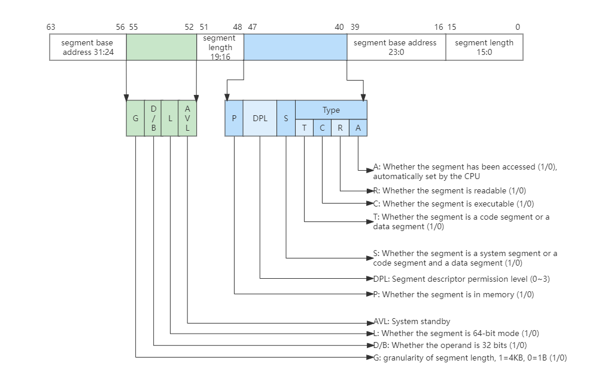
A segment descriptor has 64-bit 8-byte data, which includes segment base address, segment length, segment permissions, segment type (can be system segment, code segment, data segment), whether the segment is readable and writable, executable, etc. Although the data distribution is a bit messy, this is due to historical reasons. Multiple segment descriptors form a global segment descriptor table in memory, whose base address and length are indicated by the CPU and GDTR registers. As shown below:
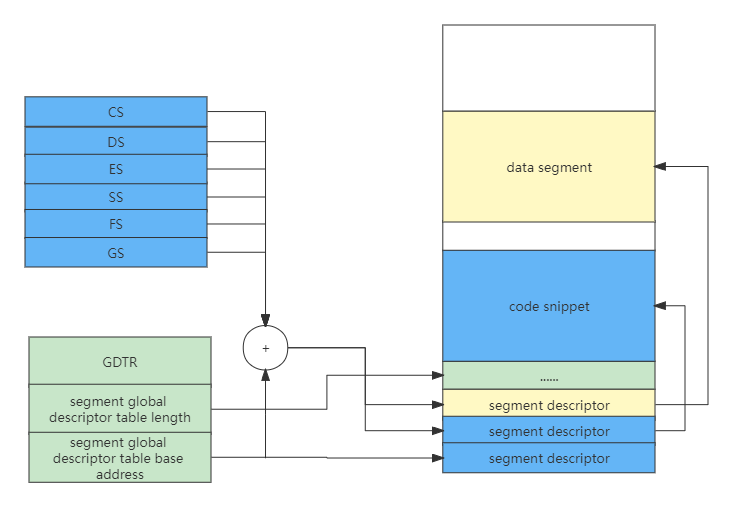
The segment register no longer stores the segment base address, but the index of the specific segment descriptor. When accessing a memory address, the index in the segment register will first find the segment descriptor in the memory in combination with the GDTR register, and then judge whether the access would succeed according to the segment information.
Protected Mode Segment Selector
The segment registers CS, DS, ES, SS, FS, GS store not only the descriptor index of a memory segment, but are actually composed of shadow registers, segment descriptor indexes, descriptor table indexes and permission levels. As shown below:
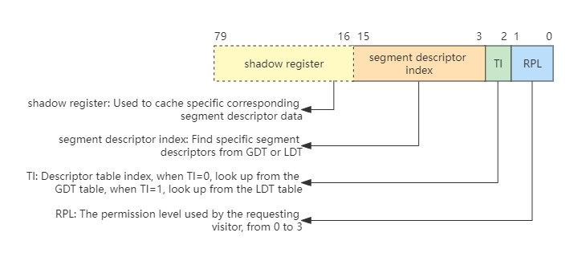
The shadow register in the above figure is operated by hardware and is invisible to system programmers. It is a cache of segment descriptors designed by hardware to reduce performance loss. Otherwise, each memory access must go to the memory to look up the table, then the performance penalty is huge, and the shadow registers are exactly 64 bits, which hold 8 bytes of segment descriptor data.
The reason why the lower three bits can put TI and RPL is because the segment descriptor is 8-byte aligned, and the lower 3 bits of each index are 0, like 1000, 10000, 11000. So the lower 3 bits can be used for other things, here they are used to put TI and RPL. Since we don’t need to pay attention to the LDT and only need to use the GDT global descriptor table, TI is always set to 0.
Usually, the RPL (Request Privilege Level) in CS and SS constitutes the CPL (Current Privilege Level), so it is often RPL=CPL, and then the CPL indicates what authority the initiating visitor needs to access the target segment. When the CPL is greater than the target segment DPL, the CPU prohibits access, and only when the CPL is less than or equal to the target segment DPL (Descriptor Privilege Level) can access.
Protected Mode Flat Model
The segmentation model has many flaws. In fact, modern operating systems use the paging model. However, the x86 CPU cannot directly use the paging model, but must decide whether to enable paging according to needs under the premise of the segmentation model. Because this is a rule of the hardware, the programmer cannot change it. But we can simplify the design to make segmentation a “fake”, which is the flat model of protected mode.
The CPU 32-bit registers can only generate addresses with a size of 4GB at most, and the length of a segment can only be 4GB, so we set the base address of all segments to 0, the length of the segment to 0xFFFFF, and the granularity of the segment length to 4KB, so that all segments point to the same (0~4GB-1) byte address space. The segment length needs to be matched with the G bit. If the G bit is 1, the segment length is equal to 0xfffff 4KB.
Protected Mode Interrupt
In Real Mode, the CPU doesn’t need to do permission checks, so it can just load the CS:IP register with the value in the interrupt vector table. The interrupt in protected mode requires permission checking and privilege level switching, so it is necessary to expand the information of the interrupt vector table, that is, each interrupt is represented by an interrupt gate descriptor, which can also be referred to as an interrupt gate. The character still has its own format, as shown in the following figure:
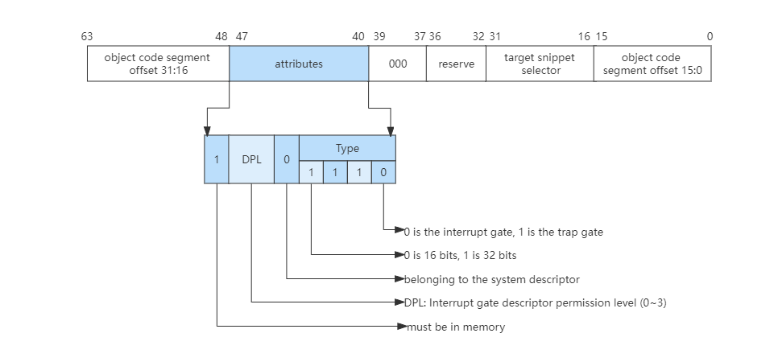
Similarly, to implement interrupts in protected mode, there must also be an interrupt vector table in memory, which is also pointed to by the IDTR register, but the entry in the interrupt vector table becomes the interrupt gate descriptor, as shown in the following figure:
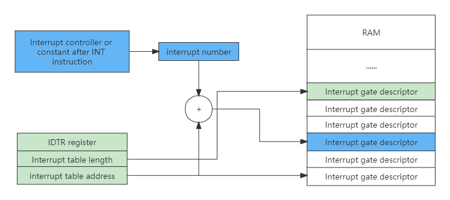
After an interrupt is generated, the CPU processes the interrupt in the following order:
- The CPU first checks whether the interrupt number is greater than the last interrupt gate descriptor. The x86 CPU supports a maximum of 256 interrupt sources (ie interrupt number: 0~255), and then checks the descriptor type (whether it is an interrupt gate or a trap gate), whether it is a system descriptor and does it exist in memory.
- Next, check the segment descriptor pointed to by the segment selector in the interrupt gate descriptor.
- Finally, do the permission check. If the CPL is less than or equal to the DPL of the interrupt gate, and the CPL is greater than or equal to the DPL of the segment descriptor pointed to by the segment selector in the interrupt gate, it points to the DPL of the segment descriptor. Further, if the CPL is equal to the DPL of the segment selector in the interrupt gate pointing to the segment descriptor, it means that the same-level authority does not perform stack switching, otherwise, it performs stack switching. If stack switching is performed, SS and ESP with specific permissions need to be loaded from TSS, and of course, the segment descriptor pointed to by the segment selector in SS must be checked.
- After completing this series of checks, the CPU will load the target code segment selector in the interrupt gate descriptor into the CS register, and load the target code segment offset into the EIP register.
Switch to Protected Mode
The x86 CPU will automatically enter the real mode after the first power-on and every reset. To enter the protected mode, the programmer needs to write code to switch from the real mode to the protected mode. The steps to switch to protected mode are as follows:
The first step is to prepare the global segment descriptor table, the code is as follows.
GDT_START:
knull_dsc: dq 0
kcode_dsc: dq 0x00cf9e000000ffff
kdata_dsc: dq 0x00cf92000000ffff
GDT_END:
GDT_PTR:
GDTLEN dw GDT_END-GDT_START-1
GDTBASE dd GDT_STARTThe second step is to load and set the GDTR register to point to the global segment descriptor table.
lgdt [GDT_PTR]The third step is to set the CR0 register to enable protection mode.
;open PE
mov eax, cr0
bts eax, 0 ; CR0.PE =1
mov cr0, eax The fourth step is to perform a long jump and load the CS segment register, that is, the segment selector.
jmp dword 0x8 :_32bits_mode Why do long jumps? This is because we cannot directly or indirectly move a data to the CS register, because when the protected mode is just turned on, the CS shadow register is still the value in real mode, so we need to tell the CPU to load new segment information .
Next, the CPU finds that the value of the 0th bit of the CRO register is 1, it will find the global descriptor table according to the instruction of GDTR, and then load the new segment descriptor information into the CS shadow register according to the index value 8. Of course, here The premise is that a series of legitimate checks are carried out. So far, the CPU has really entered the protected mode, and the CPU also has 32-bit processing capabilities.
Long Mode
Long Mode, also known as AMD64, because this standard was first defined by AMD, it enables the CPU to have 64-bit processing capabilities on the existing basis, which can not only complete 64-bit data operations, but also address 64-bit addresses space. This is even more important on large computers, which typically have several hundred gigabytes of physical memory.
Long Mode Register
Compared with the Protected Mode, the Long Mode adds some general-purpose registers and expands the bit width of the general-purpose registers. All general-purpose registers are 64 bits, and the lower 32 bits can be used separately. The lower 32 bits can be split into a lower 16-bit register, and the lower 16 bits can be split into two 8-bit registers, as shown in the following table:
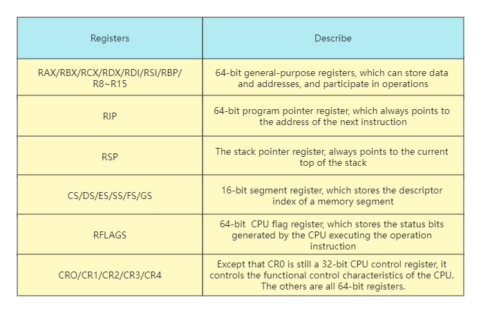
Long Mode Segment Descriptor
Long Mode still has most of the features of protected mode, such as privilege levels and permission checks. The same part will not be repeated, and only the differences between long mode and protected mode will be explained here. Let’s take a look at the format of the paragraph description in the long mode, as shown in the following figure:
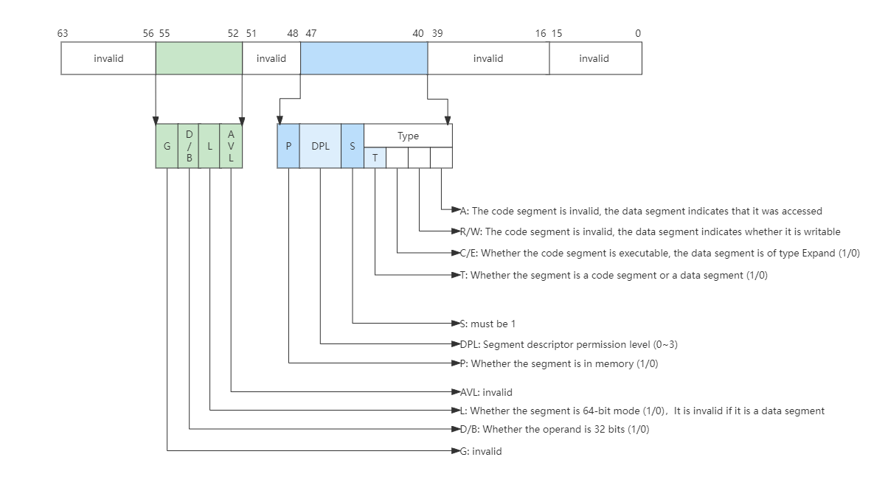
In Long Mode, the CPU no longer checks the segment base address and segment length, and only performs related checks on DPL. This check process is the same as in protected mode. When L=1 and D/B=0 in the descriptor, it is a 64-bit code segment, and DPL is still a privilege level of 0~3. Then there are multiple segment descriptions in memory to form a global segment descriptor table, also pointed to by the CPU’s GDTR register. The long mode weakens the segment mode management, and only retains the check of the permission level, ignoring the segment base address and segment length, and the address check is handed over to the MMU.
Long Mode Interrupt
In the Protection Mode, in order to realize the permission check of the interrupt, the interrupt gate descriptor is implemented. The corresponding segment selector and its offset in the segment are stored in the interrupt gate descriptor, as well as the DPL permission. If the permission check passes, use The corresponding segment selector and its intra-segment offset are loaded into the CS:EIP registers.
The Long Mode supports 64-bit memory addressing, so it is necessary to modify and expand the interrupt gate descriptor. Let’s take a look at the format of the interrupt gate descriptor in the long mode, as shown in the following figure:
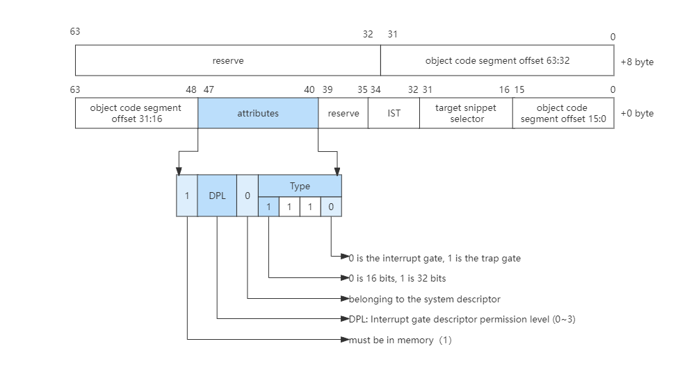
Combined with the above figure, we can see the format change of the interrupt gate descriptor in long mode.
- First, in order to support the 64-bit addressing interrupt gate descriptor, 8 bytes are added to the original basis to store the high 32-bit value of the target segment offset.
- Second, the code segment descriptor corresponding to the target code segment selector must be a 64-bit code segment.
- The
ISTin the last is theISTpointer in the 64-bitTSS.
The Long Mode also has an interrupt gate descriptor table in memory, but the entry in the table (as shown in the figure above) is 16 bytes in size, supports up to 256 interrupt sources, and checks the response to interrupts and related permissions. Protected mode is the same and will not be repeated here.
Switch to Long Mode
We can either switch directly from Real Mode to Long Mode, or switch from Protected Mode to Long Mode. The steps to switch to Long Mode are as follows.
The first step is to prepare the long-mode global segment descriptor table.
ex64_GDT:
null_dsc: dq 0
c64_dsc:dq 0x0020980000000000
d64_dsc:dq 0x0000920000000000
eGdtLen equ $ - null_dsc
eGdtPtr:dw eGdtLen - 1
dq ex64_GDTThe second step is to prepare the MMU page table in long mode. This is to enable paging mode. When switching to long mode, paging must be enabled. Think about it, the segment base address and segment length have not been checked in long mode, so the memory The address space is not protected.
In the Long Mode, the protection of the memory address space is handed over to the MMU. The MMU relies on the page table to convert the address. The page table is stored in the memory in a specific format, and its address is pointed to by the CR3 register of the CPU.
mov eax, cr4
bts eax, 5
mov cr4, eax
mov eax, PAGE_TLB_BADR
mov cr3, eaxThe third step is to load the GDTR register to point to the global segment description table:
lgdt [eGdtPtr]The fourth step is to turn on the long mode. To turn on the protected mode and the paging mode at the same time, the MSR register is defined when the long mode is implemented, and the special instructions rdmsr and wrmsr need to be used for reading and writing. The address of the IA32_EFER register is 0xC0000080, its 8th bit determines whether long mode is enabled.
mov ecx, IA32_EFER
rdmsr
bts eax, 8
wrmsr
mov eax, cr0
bts eax, 0
bts eax, 31
mov cr0, eax The fifth step is to jump, load the CS segment register, and refresh its shadow register.
jmp 08:entry64 The process of switching to Long Mode and switching protected mode is similar, but the segment descriptors that need to be prepared are different, and it is necessary to pay attention to turning on Protected Mode and Paging Mode at the same time.